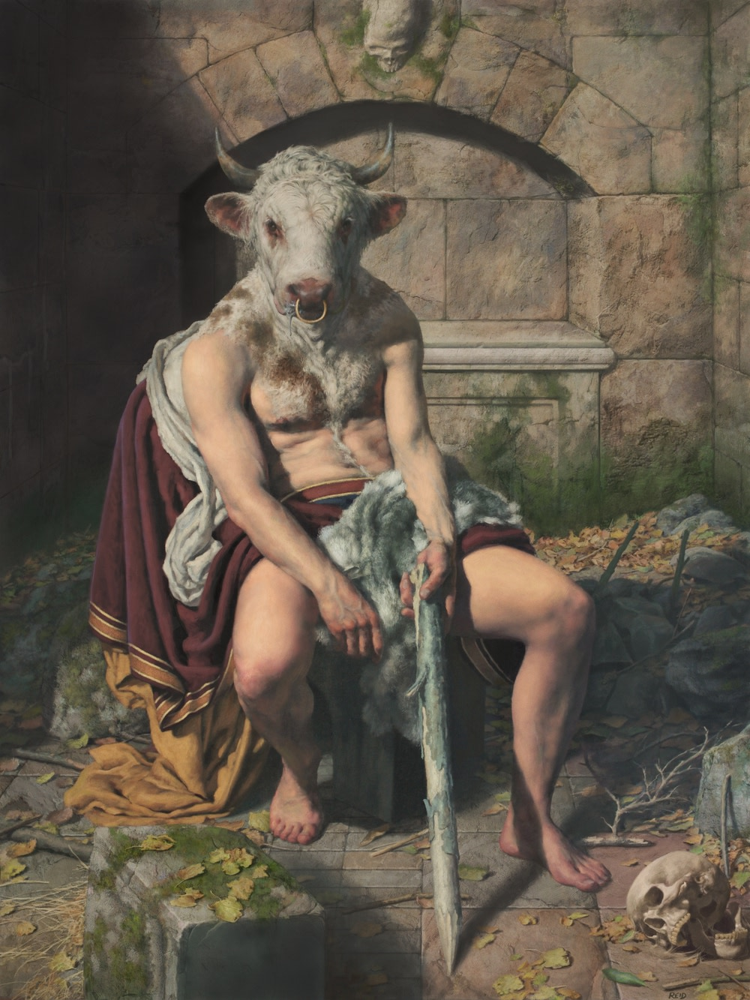
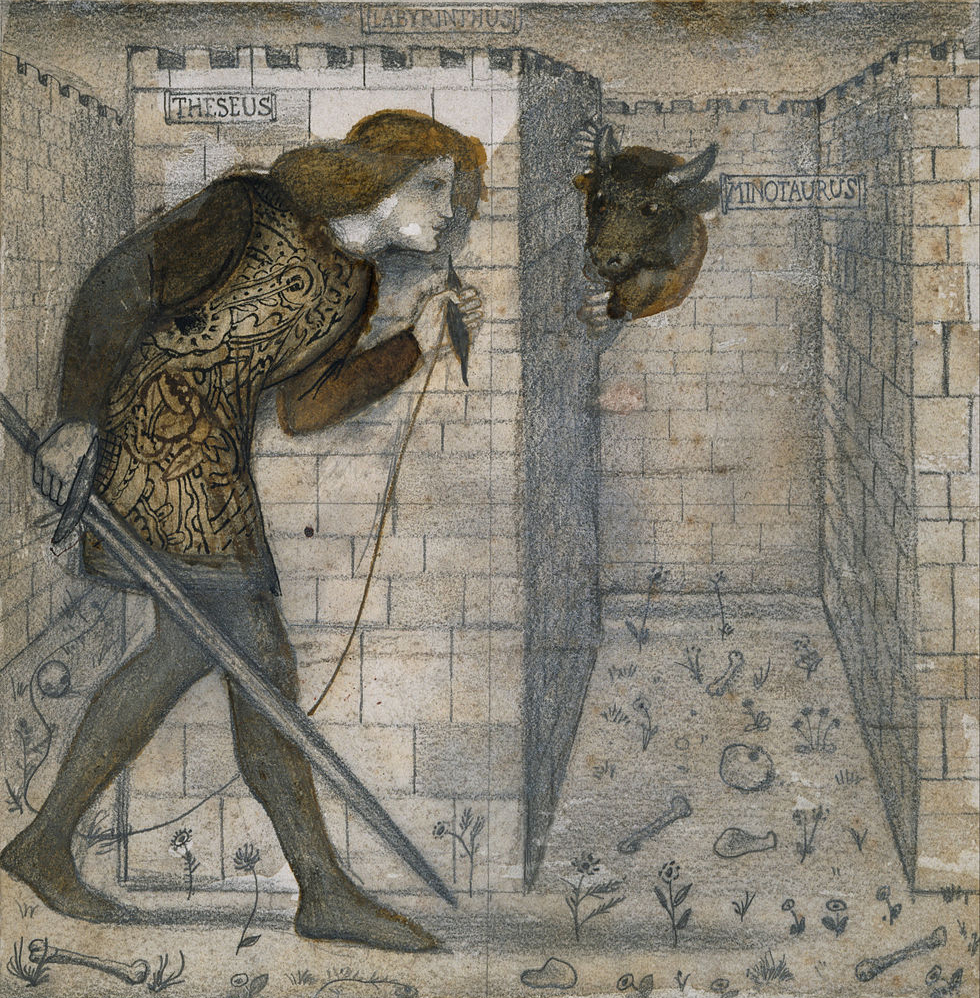
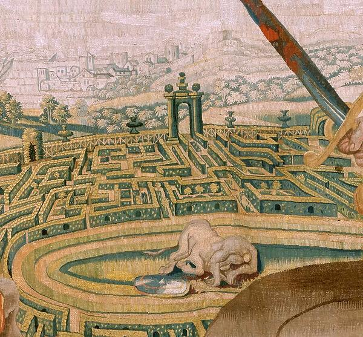

A Lenda do Minotauro
Prefácio
A lenda do Minotauro é uma das mais fascinantes e complexas histórias da mitologia grega. O Minotauro, uma criatura com corpo de homem e cabeça de touro, foi aprisionado no Labirinto, uma estrutura intricada e aparentemente inescapável criada por Dédalo a mando do rei Minos de Creta. Este mito está repleto de simbolismo esotérico e espiritual.
A Lenda
De acordo com a lenda, Minos, o rei de Creta, falhou em sacrificar um touro branco enviado por Poseidon. Como punição, a esposa de Minos, Pasífae, foi enfeitiçada para se apaixonar pelo touro, resultando no nascimento do Minotauro. Minos, então, ordenou que Dédalo construísse o Labirinto para aprisionar a criatura. O Minotauro era alimentado com jovens atenienses, enviados como tributo a Creta. Eventualmente, Teseu, um herói ateniense, entrou no Labirinto e, com a ajuda de Ariadne, filha de Minos, conseguiu matar o Minotauro e escapar.
Significado Esotérico
• O Labirinto: Simboliza a jornada interior do autoconhecimento e a complexidade da mente humana. Representa os desafios e as armadilhas que encontramos ao tentar compreender a nós mesmos e nosso propósito.
• O Minotauro: Encarnando nossos medos e desejos mais primitivos, o Minotauro simboliza a parte bestial e instintiva do ser humano. Encarar e superar o Minotauro é um ato de confrontação e dominação de nossos próprios impulsos sombrios.
• Teseu: Como herói, Teseu representa a coragem e a busca pela verdade. Sua jornada para matar o Minotauro simboliza o processo de iluminação, onde a sabedoria e a coragem são necessárias para vencer as partes mais sombrias de nossa psique.
• Ariadne e o Fio: Ariadne simboliza a intuição e a orientação espiritual. O fio que ela dá a Teseu representa o caminho da sabedoria e a conexão espiritual que guia o indivíduo através do labirinto de desafios e confusões da vida.
• Dédalo: O arquiteto do Labirinto representa a engenhosidade e a criatividade humana, mas também a capacidade de criar armadilhas complexas para nós mesmos.
Reflexão
A lenda do Minotauro, portanto, é uma metáfora rica para a jornada espiritual e psicológica do ser humano. Ela nos lembra que, para alcançar a verdadeira iluminação, devemos confrontar e dominar nossos próprios demônios internos, guiados pela sabedoria e pela intuição.